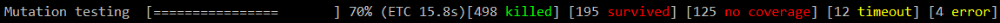

Stryker 0.5.5 released!
Published: 30 December 2016
The latest version of Stryker, version 0.5.5, has been released! This release bring a number of improvements that will make your life easier.
The full changelog can be found on GitHub. In this post we'll dive into a couple of new features.
To upgrade to Stryker 0.5.5, simply run: npm i --save-dev stryker-api@0.4.2 stryker@0.5.5
🔗 New progress reporter
The progress reporter got a fresh new look! It will now display a progress bar, the percentage of doneness and an ETC (Estimated Time of Completion).
Gone are the days of guessing how far Stryker has come and how long it'll need!
You can use it by setting reporter to 'progress' in your stryker.conf.js.
The new progress reporter looks like this: 
Do you still want to use the old reporter? It's still there! Just use the repoter 'dots' in your configuration.
🔗 Clear text reporter updated
The clear text reporter no longer prints every single test that was executed for a mutant. It now only prints the first three tests and mentions how many more tests were executed.
If desired, you can overwrite this behavior by adding the following piece of config to your stryker.conf.js:
clearTextReporter: {
maxTestsToLog: 25
},
Don't want to know which tests were executed? Feel free to set the maxTestsToLog property to 0.
🔗 Karma config parsing
In addition to this release of Stryker, we've also added support for an often requested feature: reading your existing karma.conf.js in the stryker-karma-runner!
Starting with version 0.3.3, you can add the location of your karma config file to Stryker.conf.js and have it automatically be picked up by the plugin. This reduces code duplication between these two files.
This is what your new stryker.conf.js might look like:
// Stryker.conf.js
module.exports = function (config) {
config.set({
testRunner: 'karma',
testFramework: 'jasmine', // <-- add your testFramework here
karmaConfigFile: 'karma.conf.js' // <-- add your karma.conf.js file here
mutate: [
'src/**/*.js' // <-- mark files for mutation here
]
});
}
As you can see, there is no need to specify which files Stryker should use! You only have to specify which files you want to mutate. A more detailed explanation of this feature can be found in the stryker-karma-runner README.md.
🔗 We hope you enjoy this new version of Stryker! We'd love to hear your feedback on Slack and/or Twitter (with hashtag #strykermutator)!
Want to get in touch? Find us on Slack or Twitter.
Back to blogs